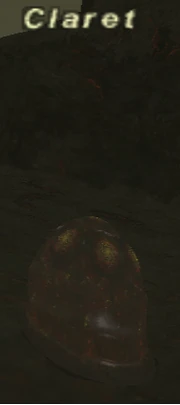

Level 75 reference · Zenith rules
|
Job: |
 |

| Zone | Level | Drops | Steal | Spawns |
Notes |
|---|---|---|---|---|---|
| 1 | |||||
|
HP = Detects Low HP; M = Detects Magic; Sc = Follows by Scent; T(S) = True-sight; T(H) = True-hearing JA = Detects job abilities; WS = Detects weaponskills; Z(D) = Asleep in Daytime; Z(N) = Asleep at Nighttime | |||||

Notes:
- Spawned by trading Pectin to the ??? at J-8 in Mount Zhayolm (In the tunnel, at the drop-off point)
- Claret does not appear to perform any normal attacks, relying instead on TP moves only. TP Moves of note include:
- Fluid Toss: Ranged attack, 150-800 Damage, absorbed by Shadows, nearly always inflicted 100hp/hit Poison.
- Fluid Spread: AoE damage, absorbed by 1-3 shadows
- Digest: Single target HP Drain
- Mucus Spread: AoE Slow
- Epoxy Spread: AoE Bind
- In addition, Claret "attacks" by sitting on top of the player who has hate. While on them, it inflicts a poison effect with 100hp/tick Damage. The Poison generally lasts 3-5 ticks, unless Claret remains on top of your character.
- Claret appeared to be draining hp while sitting on top of players. Verification Needed
- This poison effect overrides the effect of Poison Potions.
- Moves with enhanced movement speed. Verification Needed
- Susceptible to Gravity.
- Cannot be slept.
Strategies:
- (see testimonials)
Adapted from Eden Wiki: Claret · Contributors and history · CC BY-SA 4.0. Revision 46488. Layout, links and optional background text adapted for Zenith.